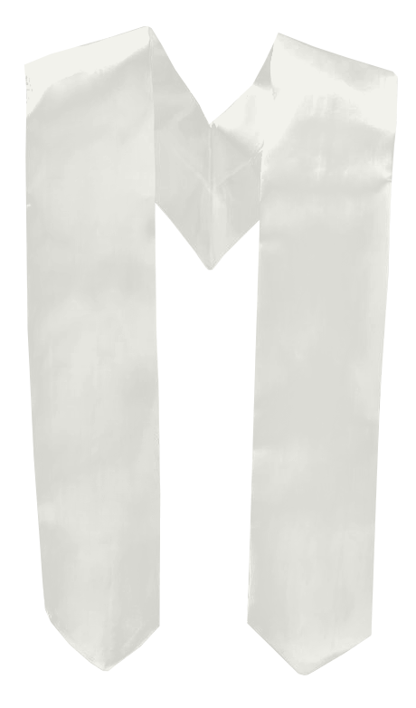

Robe din atelierul nostru
Robele cu fermoar sunt disponibile în negru, albastru și vișiniu, în cinci mărimi: XS, S, M, L și XL. Alegerea se face în funcție de înălțimea absolventului. Confirmați mărimile cu echipa înainte de comandă.
ROBE ȘI EȘARFE
Robe, toci și eșarfe realizate pentru momentul în care întreaga promoție se reunește. Alegem împreună mărimile, culorile și personalizarea.
Cere o ofertă ↗
DETALII CARE FAC DIFERENȚA
Robele cu fermoar sunt disponibile în negru, albastru și vișiniu, în cinci mărimi: XS, S, M, L și XL. Alegerea se face în funcție de înălțimea absolventului. Confirmați mărimile cu echipa înainte de comandă.
Modelul clasic completează ținuta cu o bentiță colorată și un medalion auriu. Stabiliți detaliile împreună cu echipa, pentru o imagine unitară a promoției.
Eșarfe duble, personalizate cu numele instituției și promoția. Paleta include tonuri de albastru, verde, roșu, auriu și nuanțe pastelate.
DETALIUL CARE COMPLETEAZĂ ȚINUTA
Toci Perfect Fit și Clasice, în negru, albastru sau vișiniu. Descoperiți modelul potrivit pentru ținuta promoției voastre.
01 / ALEGE MODELUL
02 / ALEGE CULOAREA
03 / CULOAREA BENTIȚEI
Perfect Fit, în culoarea Negru.
Imagini ilustrative create pe baza modelelor de referință. Pentru modelul Clasică, bentița poate avea oricare dintre cele 21 de culori ale eșarfelor. Nuanțele se confirmă la comandă.
O CULOARE. O ÎNTREAGĂ PROMOȚIE.
Explorați cele 21 de culori ale eșarfelor. Alegeți o nuanță și vedeți cum arată, descoperiți combinația care vă reprezintă.
Alb, Albastru, Auriu, Bej, Cărămiziu, Gri închis, Sky, Vernil deschis, Caraibe, Ciclam, Galben, Lila, Mentă, Mov, Olive, Portocaliu, Roșu, Roz, Somon, Verde, Vișiniu.

PALETA VOASTRĂ
Apasă pe o nuanță pentru a vedea eșarfa.
Culoare selectată: Alb.
Eșarfele se personalizează cu instituția și promoția. Nuanțele afișate pot varia în funcție de ecran; detaliile se confirmă la comandă.
PREGĂTIM ÎMPREUNĂ
Trimiteți numărul de absolvenți, înălțimile, culorile preferate și denumirea instituției. Vă ajutăm să confirmați detaliile înainte de pregătire.